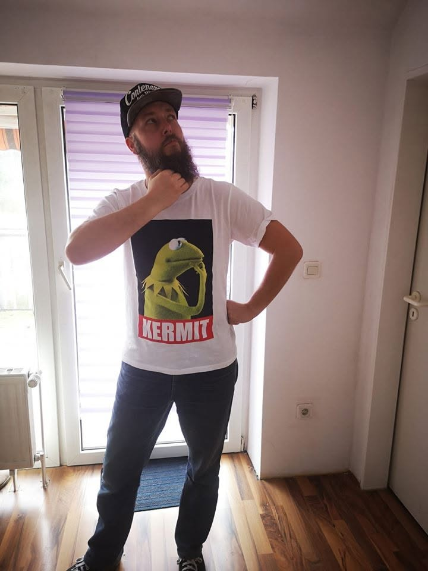

System response / 404
404
Page not found
Hmm.
I could have sworn there was a page here.
Maybe it moved.
Maybe it never existed.
Maybe I should stop touching things.
Current status: still thinking

System response / 404
Hmm.
I could have sworn there was a page here.
Maybe it moved.
Maybe it never existed.
Maybe I should stop touching things.
Current status: still thinking
